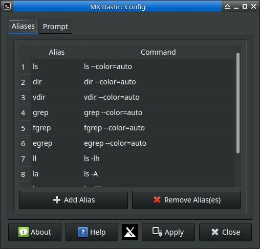

MX Bashrc Config allows the user to make changes to the aliases and terminal prompt theming in the user's bashrc file.
Allows the user to make changes, additions, and removals of aliases contain in the user's bashrc file. the aliases will go into effect on the next terminal launch
On this tab the user may make various adjustments to their terminal prompt by selecting the "Fancy Prompts" option. The options dialog will then appear.
The user may revert back to whatever prompt was previously the default prompt by selecting "Default"
Development history: Nite Coder, for MX Linux project